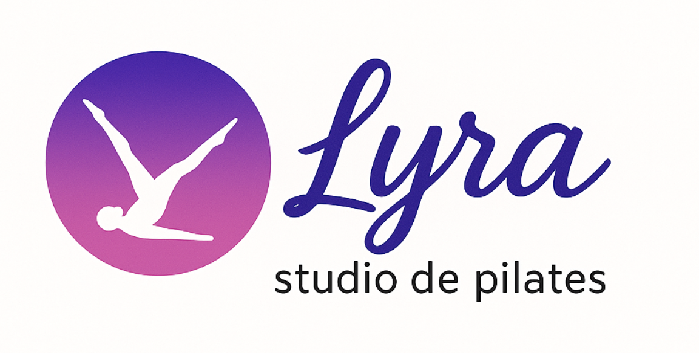

O Studio Lyra nasceu do desejo profundo de transformar vidas por meio do movimento consciente.
Fundado por Alani Spinosa em 2017, o estúdio surgiu como resposta a uma inquietação: perceber que muitas aulas de pilates haviam perdido sua essência — tornando-se automáticas, repetitivas e sem conexão com o corpo real de cada aluno.
Após um período de estudos, experiências e amadurecimento, o Studio Lyra foi reestruturado em 2025 com uma nova proposta: resgatar a qualidade do movimento, a presença no exercício e o verdadeiro propósito do pilates como ferramenta de equilíbrio, saúde e bem-estar.
Aqui, cada aula é planejada com base em fundamentos técnicos, atenção individual e muito carinho. Nosso compromisso vai além da estética: buscamos ajudar nossos alunos a se reconectarem com seus corpos, sua respiração e sua força interior.
Promover saúde e bem-estar por meio do movimento consciente e fundamentado, oferecendo aulas de pilates que respeitam o corpo, valorizam a individualidade e buscam o equilíbrio entre técnica, fluidez e qualidade de vida.
Viva a experiência do pilates no Studio Lyra! Agende uma aula experimental gratuita, sem custos e sem compromisso. É rápido e fácil — basta clicar no botão abaixo. 💜
Agendar AgoraFicou com alguma dúvida ou quer falar com a gente?